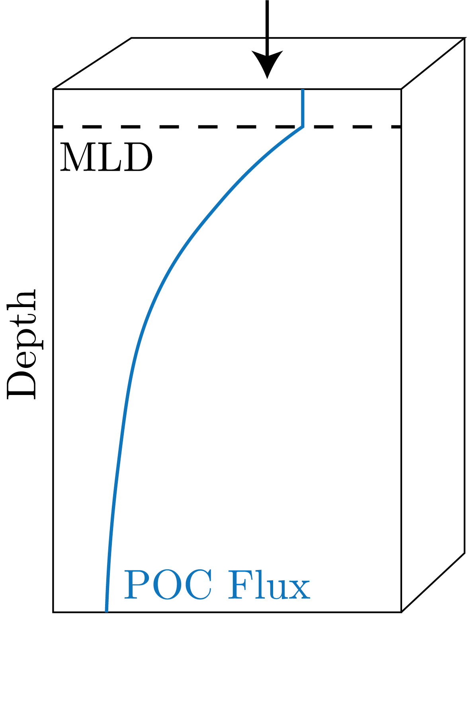

Therefore, we really have the denitrification has to equal N$_2$ fixation at steady state in the global ocean.
We have the following pathway: More N through fixation and / or deposition $\to $ More biology $\to $ More export $\to $ Less oxygen at depth $\to $ Greater OMZ regions $\to $ More denitrification.
This last step provides the stabilization to perturbations in the N cycle.
Now, if there is more N to begin with, then we do not need as much N fixation and then the cascade above will reverse.
Particulate Carbon Fluxes
We start our study with the canonical Martin Curve, presented in Fig. 1.

Fig. 1: The canonical Martin curve.
We can describe this as:
\begin{equation}
\phi(z) = \phi(z_0)\left( \frac{z}{z_0} \right)^{-b},
\end{equation}
which is a power law.
We can then say that this resembles our OUR as it is the utilization of oxygen by the particles described by the Martin curve.
As the water mass ages, we get that in the surface ocean the AOU goes up as O$_2$ goes down at the same depth in the ocean in steady state.
In the deep ocean we have that the AOU is lower and then given the transport oxygen will go up again (the regimes discussed in the previous lectures).
Drivers of Sinking Particles
Fundamentally, we have that the bouyancy force is less than the gravitational force.
We can write this down in terms of densities in [kg m$^{-3}$]:
\begin{align}
\rho_{\text{org}} &\sim 1060 \\
\rho_{\text{CaCO}_3} &\sim 2710 \\
\rho_{\text{litho}} &\sim 2710 \\
\rho_{\text{opal}} &\sim 2710.
\end{align}
The last three are so dense that we call those particles ballast.
Therefore, the composition of the particles in these types is going to change the density and therefore the buoyancy.
The terminal velocity experienced by a spherical particle in a fluid is given by:
\begin{equation}
w_{\text{sink}} = \frac{2}{9}\frac{g r^2}{\mu}(\rho_{part} - \rho_{sw}),
\end{equation}
for low $\text{Re}$ numbers (that is, in a laminar flow), defined in this case as:
\begin{equation}
\text{Re} = \frac{wD}{\nu} = \frac{wD\rho_{sw}}{\mu},
\end{equation}
for $\nu$ and $\mu$ the kinematic and dynamic viscosities.
We now give a proof sketch now by first assuming that the drag for a sphere is:
\begin{equation}
F_d = \frac{1}{2}\rho_{sw}v^2C_dA.
\end{equation}
At low $\text{Re}$ we know that $C_d = 24 / \text{Re}$.
We can then substitute this all in, we get:
\begin{equation}
F_d = \frac{1}{2}\rho_{sw}v^2\frac{24 \mu}{v 2 r \rho_{sw}}\pi r^2 = 6 \pi \mu r v.
\end{equation}
We then define the buoyancy net force as:
\begin{equation}
F_g' = \frac{4}{3}\pi r^3 g \left( \rho_{\text{part}} - \rho_{sw} \right).
\end{equation}
Then, at terminal velocities we have that these forces are equal, and then get:
\begin{equation}
6 \pi \mu r w_{\text{sink}} = \frac{4}{3} \pi r^3 g (\rho_\text{part} - \rho_{sw}).
\end{equation}
Solving for $w_{\text{sink}}$ we get our answer.
We can say that the faster the sinking velocity, the better the record is preserved.